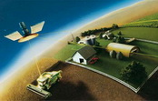
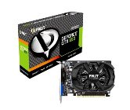

Статьи о компьютере
8-ядерные процессоры производства AMD: FX 8320, FX 8300 и FX 8350.
Техасский производитель процессоров и видео-акселераторов порадует любителей архитектуры Bulldozer и процессоров AMDFX на их базе. Пользователям компьютеров построенных на платформе AM3+ вскоре будут предложены 8-ядерные процессоры, производительные, нежели чем предыдущие версии.подробнее >>
Всё о правильном выборе цифровой фоторамки.
Цифровая фоторамка довольно новое понятие, но все же ставшее популярным среди большинства людей. Теперь это не только диковинка, которую могли позволить себе лишь некоторые, но и часть интерьера, получающая все большую популярность.подробнее >>

подробнее >>
ГЛОНАСС и GPS. В чем отличие?
Система спутниковой навигации ГЛОНАСС давно известна потребителям устройств под названием «навигаторы», а вот остальной части россиян было более известна навигация на базе GPS. С тех пор, как появились новости об установке в городском транспорте систем ГЛОНАСС, появились вопросы – а нужно ли это, и если да, то зачем?подробнее >>
3D видео без очков. Технология будущего.
Очки, без которых на данный момент невозможен просмотр 3D-контента, скоро могут стать частью истории. Любители трёхмерного кино смогут наслаждаться любимыми фильмами, не ставя себя в зависимость от неуклюжих очков или от положения тела перед телевизором.подробнее >>
Оптические процессоры - технологии будущего.
Главный постулат Мура, гласит: количество транзисторов в мини процессорах будет удваиваться через каждые восемнадцать месяцев. А постоянное уменьшение размеров процессора может привести к тому, что закон Мура достигнет своего максимума. Прогнозируется достижение физического апогея в уменьшении объемов маленьких частиц, из которых складываются всевозможные чипы.подробнее >>

подробнее >>
Новые видеокарты: GeForce GTX 660 и GTX 650.
Компания Palit, отличный производитель графических адаптеров для персональных компьютеров, представляет новые модели видеокарт GeForce GTX 660 и GTX 650. За основу взята архитектура NVIDIA Kepler, известная по своей отличной как производительности, так и энергоэффективности.подробнее >>
Для чего нужен бэкап?
Такая катастрофа как потеря информации может настигнуть почти каждого пользователя, кем-бы он не был. Вы не можете этого ожидать. К примеру, вы можете очень удивиться непонятной пропаже вашей папки со свадебными видео и фотографиями или макетами и чертежами.подробнее >>
Компьютерный корпус весом в 13 кг.
Компания LianLi занимается разработкой поистине громадного компьютерного корпуса под кодовым названием PC-D8000. Новинка имеет огромные размеры 405 х 628 х 572, при этом общий вес корпуса PC-D8000 составляет тринадцать килограмм.подробнее >>
Автомобильные видеорегистраторы.
С недавних пор, у водителей автомобилей появился помощник в решении спорных вопросов ДТП. Это помощник является нечто иное как видеорегистратор. Идея снабдить автомобиль видеозаписью с самого начала имела успех, так как автомобильный видеорегистратор, позволяет выполнять видеозапись движения автомобиля даже на длительные расстояния.подробнее >>

Самые необходимые компьютерные аксессуары.
Есть множество аксессуаров, встроенных в компьютер или прилагающихся отдельно. С помощью передовых технологий придумывают новые и инновационные гаджеты. Аксессуары, способные дополнить функции компьютера, внедряются на рынок регулярно. Рассмотрим наиболее важные аксессуары для компьютера.подробнее >>